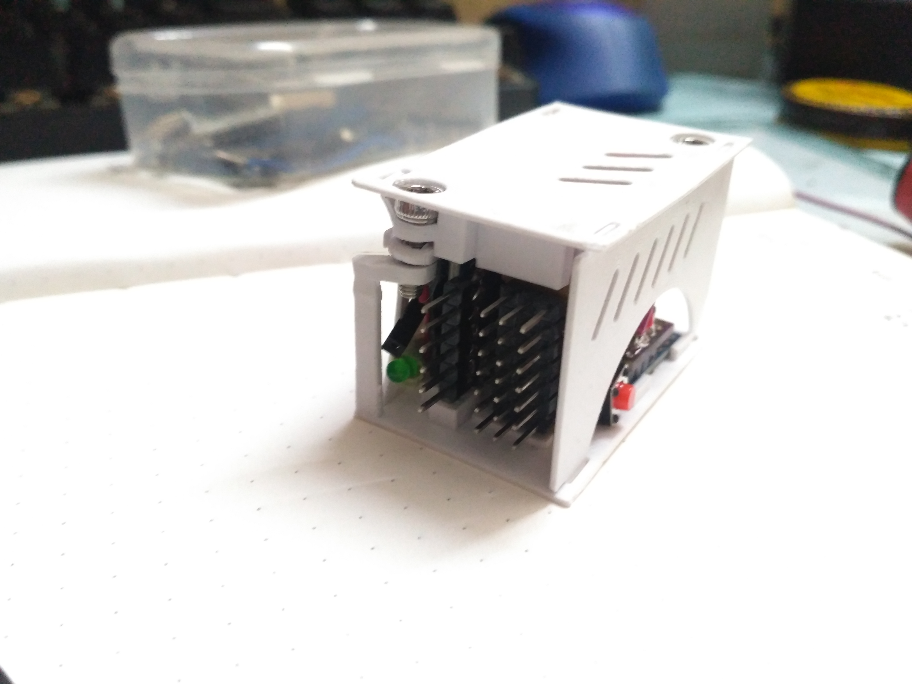
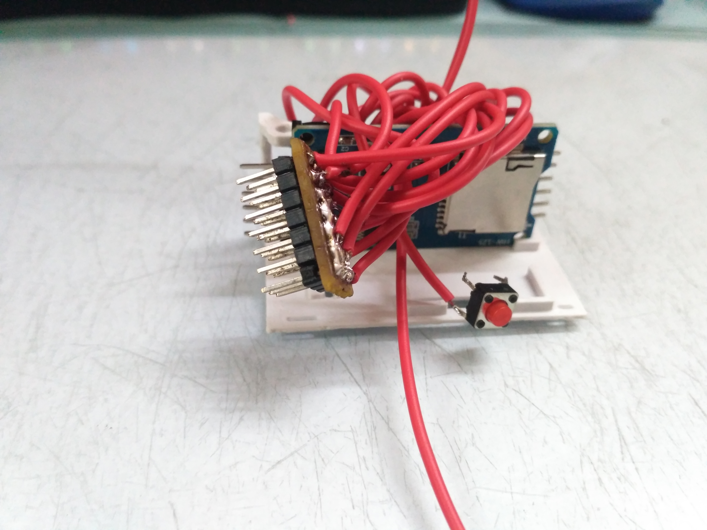
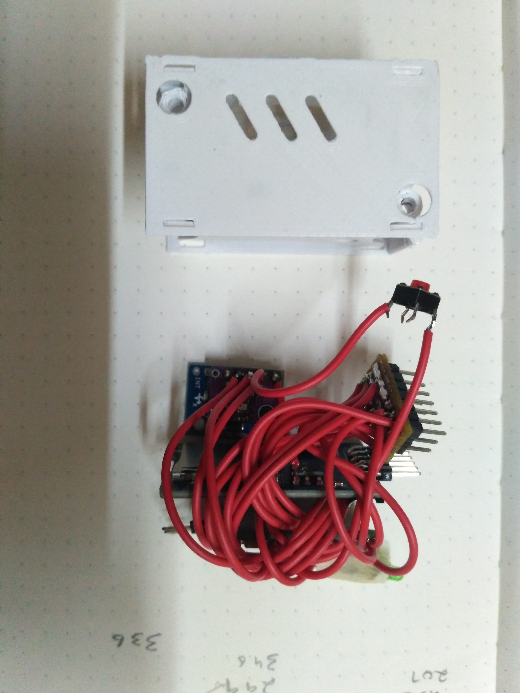

Module Alpha
This is a module which will record the gyroscopic data and the altitude. It contains an Inertial measurement unit and a barometer. its intended use is to record the flight data of an RC airplane, although it can be used anywhere where 5V DC power is available.
My initial plan requires the module to be under 30mm x 30mm x 50mm, it would have been fairly easy if I had the knowledge and access to make my own PCB's but all of the electronics is made with off the shelf parts.
The initial design was to make it just as a data recording device but it slowly transformed to having all the necessary IO for a flight controller.

The original plan for the electronics was to use a microcontroller more powerful than an Arduino, and my choice was the Raspberry Pi Pico, as it is a dual core design, one core can be used for communication and data logging and the other to control the vehicle. Pico has excellent documentation but no easy setup process, at least for windows devices. Micro python isn't my choice when it comes to coding microcontrollers, maybe that will change but for now setting up the development environment for Pico that runs C++ was quite a hassle. Hence, Arduino Pro Mini it is.
IO
| GND | A0(Analog input) | A1(Analog input) | A2(Analog input) |
|---|---|---|---|
| VCC | A3(Analog input) | A6(Analog input) | A7(Analog input) |
| MISO | GND | 5V | D10 (PWM output) |
| MOSI | GND | 5V | D9 (PWM output) |
| SCK | GND | 5V | D6 (PWM output) |
| CS | GND | 5V | D5 (PWM output) |
| GND | 5V | D3 (PWM output) |
3.3V: Attached to a female connector
Button: Programmable button on digital pin 2, currently used to start the data recording.
Error code LED Connected to digital pin 4
| Cannot initialize motion processing unit | 4 pulses and a 1 second gap |
|---|---|
| Cannot initialize SD card module | 5 pulses and a 1 second gap |
| Module is ready to function | Light is continuously on |
I2c interface, it is not made plug and play due to last minute changes to the module, however you can solder wire to the SCL and SDA pins.
Arduino IO
| GND |
|---|
| GND |
| VCC |
| RX1 |
| TX0 |
| DTR |
There is a small hole the housing to access the reset button of the Arduino.
from CAD to 3D printed model.


Process



